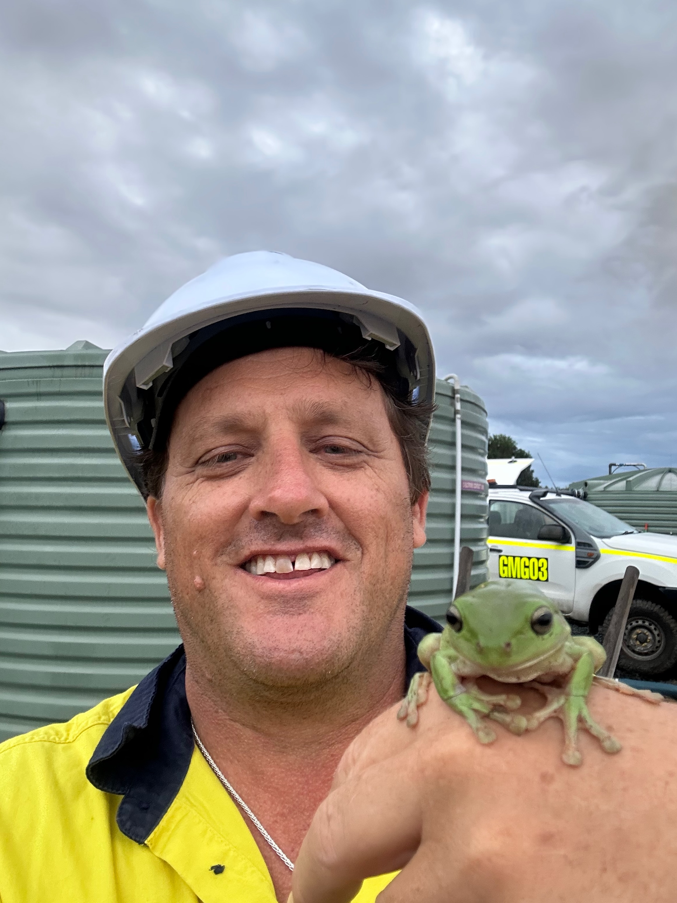
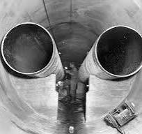
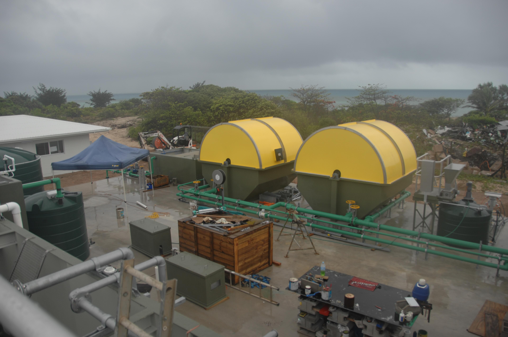
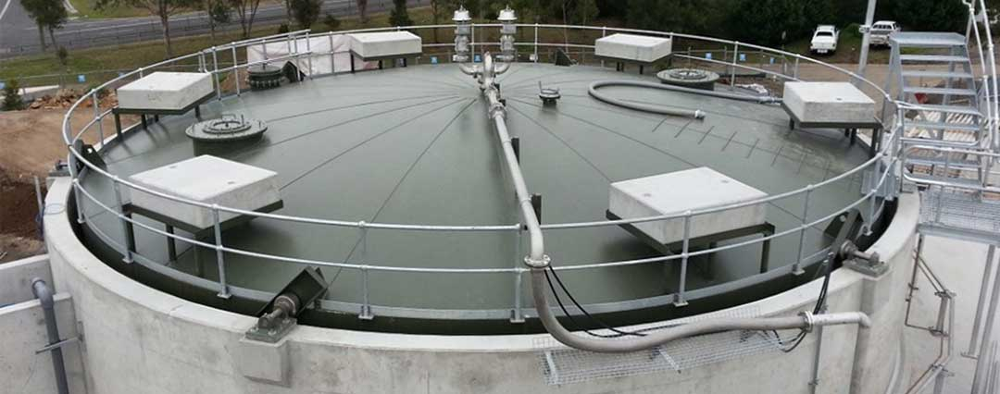
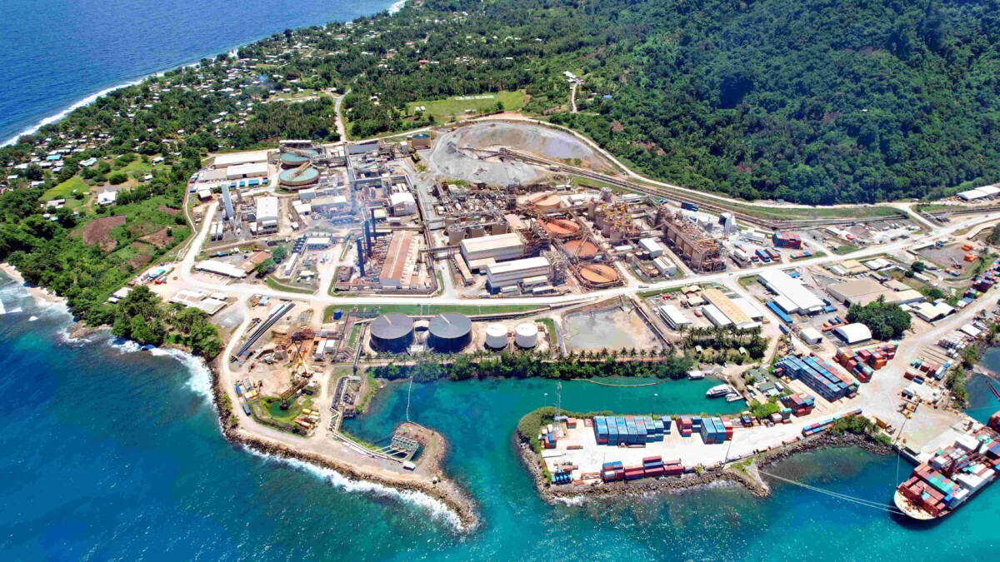
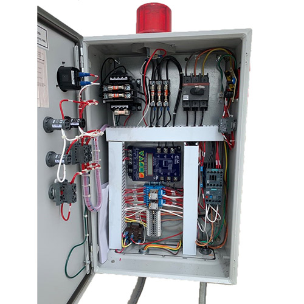
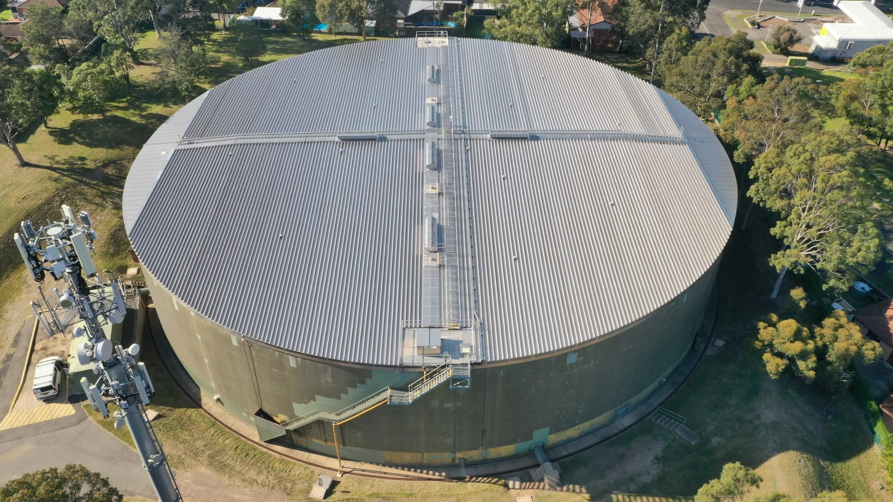
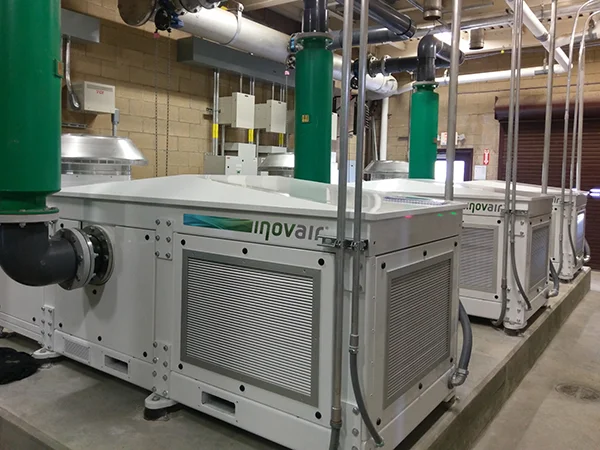

From 60 metres beneath the Brisbane River to remote islands in the Torres Strait and Papua New Guinea — every project delivered on time, on budget, zero incidents.

Upgraded the Sewage Treatment Plant to meet Environmental Licence requirements while exceeding mechanical performance targets. Resolved an ongoing operational problem that had been costing the site significantly in sucker truck expenses.
Resolved engineering challenges and provided estimates for refurbishing two pipes within a leaking tunnel situated 60 metres beneath the Brisbane River. Shutting down the pipeline would have required a continuous convoy of vacuum trucks across the Gateway Bridge — making failure not an option.


Managed full estimation, project management, and installation of a Package Sewage Treatment Plant on a remote Torres Strait island. Oversaw placement of two 12-metre specially coated steel tanks while managing concurrent contracts.

Installed Australia's first fixed digester lid — a 12-metre diameter lid atop a 13-metre concrete tank with rollers for vertical movement based on methane levels. Fabricated in two halves on-site, welded and coated to Sydney Water's stringent standards using a 300-tonne rated crane.

Oversaw site operations and managed installation of a circular Package Sewerage Treatment Plant on Lihir Island in PNG. Collaborated closely with all stakeholders including local labourers to ensure project success in a remote international environment.

Upgrades of water treatment chemical dosing systems across nine outlying regions of Mackay, including full SCADA and PLC upgrades. Also delivered a high-filter package plant to enable wastewater irrigation by sprinklers across the region.

Refurbishment and redesign of five drinking reservoir roofs and associated SCADA and valves for Urban Utilities across Brisbane. Also completed refurbishment of a 1-acre reservoir roof — all while maintaining supply continuity.

Installation of blowers and full refurbishment of digester tanks in Newcastle, including both digital and analogue VSDs and VFDs. Delivered upgraded lifting frames and diffusers in a live digester tank in Brisbane — 21 new units redesigned and installed without shutdown.
A selection from 30+ years of completed contracts across Australia and the Pacific.
From feasibility through to final sign-off and 12-month warranty. Let's talk.
Get in Touch